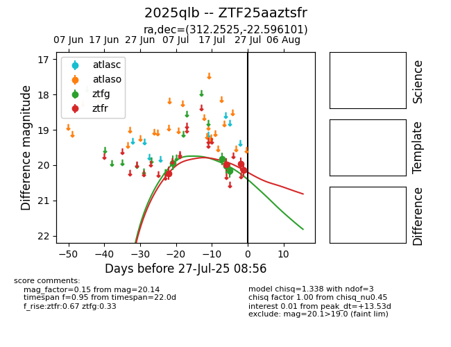

Target 2025qlb at 2025-07-27 08:56, see:
FINK: fink-portal.org/2025qlb
Lasair: lasair-ztf.lsst.ac.uk/objects/2025qlb
ALeRCE: alerce.online/object/2025qlb
TNS: wis-tns.org/object/2025qlb
YSE: ziggy.ucolick.org/yse/transient_detail/2025qlb
alt names
ZTF25aaztsfr (ztf,fink)
2025qlb (tns,yse)
coordinates:
equatorial (ra, dec) = (312.2525,-22.59610)
galactic (l, b) = (23.3809,-35.34353)
photometry
last ztfg=20.16, ztfr=20.14
4 ztfg, 4 ztfr detections
